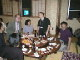
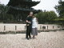

| Back to Eric's Home Page | Up to Site Map | $Date: 2002/08/02 04:41:25 $ |
There was a strange, ambiguous tension about my first landing in Japan. I went there expecting to be disappointed, and hoping not to be.
Even for Americans with no cultural ties to the place, the land of the sword and chrysanthemum has acquired a distinctness in our imagination few other non-European cultures can match -- a bloody and romantic image compounded from samurai movies, silk paintings, images of geishas, prints by Hokusai, and all the other japanoiserie that has filtered over the International Date Line since Commodore Perry's time. And, of course, it isn't like that. Not any more.
But from across the width of the Pacific, a martial artist and haiku poet and sometime Zen mystic like me can feel very tempted to love the place all the same. Some of what I have chosen to become, even in the still places nearest the core of my self, was first named and given shape in Japan. That means something -- and one of the reasons I was ready to go there when asked was to find out just what.
Morning of 25 May, 1999: I had just just finished reading my second history of Japan as my plane touched down at Narita Airport. As the cabin crew went through their ritual announcements in Japanese and English, I tried to estimate the languages' relative bit density by timing them. The Japanese version seemed to take about three times longer. Not surprising; English is very dense. Outside, it was a hot, humid day under cloudless blue skies. One of my fellow passengers, a middle-aged American woman with the look of an experienced traveller, assured me ``You've come to a wonderful place.''
Airports look like airports everywhere; if not for the kanji on the signs, Narita would hardly have been distinguishable from two dozen others. My first taste of Japanese uniqueness was the wizened little old man in the elaborate uniform standing near the head of the passport-control line, waving arriving passengers towards available agents with the polite imperiousness of a man who wants you to leave without any doubt that his job is utterly necessary to the scheme of things.
I found my first local guide with a minimum of bother. Atsushi Tajima turned out to be a handsome, studious-looking young man, clearly a recent university grad, who invited me to call him A.T. on the grounds that his name is hard to pronounce. I assured him I could handle `Atsushi' just fine and politely refused his offer to carry my bags. At our bus stand, a sign announced trips to Disneyland.
The bus ride to Tokyo was rather extended and we had time to talk of many things. Atsushi's English was quite good, if a bit hesitant; he had lived in Los Angeles for two years. He pointed out Tokyo Disneyland through one window, and later on an artificial ski slope built in the middle of Tokyo (as if Japan didn't have enough mountains already!) At one point I found myself trying to explain the appeal of Zen Buddhism to Western intellectuals, something he said he didn't understand. ``Nobody cares about it here,'' he said.
Outside, it looked like New Jersey. Ugly highways, crowded with cars and small trucks, cut through low hills covered with lush greenery. The one rice-paddy farm Atsushi pointed out barely managed not to look like an anachronism. I asked Tajima-san what the Japanese for ``Excuse me'' is in case I jostled someone, remarking that I understood the importance of being polite, and he astonished me. ``Not so necessary these days to be polite,'' he said ``just to appear polite.'' I wondered what the difference could possibly be, but sensed that any answer would probably be more confusing than enlightening and held my peace.
Tokyo itself I mentally tagged the City of Weird Buildings. They were all western-style, but with a good many bizarre wedge shapes and skinny towerlets sitting on contorted plots of land. Atsushi confirmed that this is what happens when you combine astronomical real-estate values with incomprehensible zoning rules. A thick blanket of smog hung over the city, low in a pitiless sky.
As we pulled up to the Palace Hotel I noticed the first traditional building I had seen yet, white plaster and curved roof-tiles peeping through trees over a stretch of water. ``The Emperor's garden'' Atsushi said; and indeed the lobby doors of the Palace Hotel turned out to sit about a hundred yards from the main gatehouse of the Imperial Palace grounds. We walked over after I got settled in, only to find it closed. As we looked down he walk at the closed gates, Atsushi astonished me again by telling me he'd never tried to visit the place. ``It's your history, man!'' I said, and he told me he had only studied enough Japanese history to pass his college entrance exams. ``I feel a little ashamed'' he said, looking more meditative than I had yet seen.
One of my Japanese contacts had recruited a resident American, with interests paralleling mine in martial arts and computers, to show me around a bit; I had exchanged email with her from the U.S. A short while after Atsushi left me settled in, Patricia Yarrow materialized at my door. She turned out to be a tall, lean, contralto-voiced woman who looked at first glance as though the word `awkward' ought to describe her, but actually moved with the sureness and unobtrusive grace I'd expect of a long-time aikido student. We went to the hotel restaurant for dinner. She ordered in fluent Japanese.
Patricia, too, assured me I had come to a wonderful place. But then: ``The veneer of Western civilization is about four millimeters deep here. Underneath they're still rice farmers.'' She added that she meant that in a good way -- she claimed Japanese will often deny or not talk about their attachment to traditional things, as if (I gathered) their core cultural identity is a private thing not for the eyes of gaijin (outsiders).
This sounded plausible, but I also felt Tajima-san had been sincere to this gaijin in that meditative moment at the Emperor's gate. One distinction basic to the social psychology of Japanese has always been honne (truth; literally ``taproot'' or ``trunk'') versus tatemae (face; literally ``standing in front of''), with honne a deeply private matter and tatemae the acceptable self presented to the world. Perhaps (I thought) the traditions of Japan are still honne and Westernization tatemae -- but a `face' so accustomed that younger Japanese acknowledge their roots hardly more often to themselves than they do to outsiders.
Or perhaps it was just Tajima-san. ``Beware of generalizations,'' Patricia said gravely, unaware of my musings. ``They don't work here.'' Meanwhile, kimono-clad waitresses fluttered around us, looking (Patricia agreed, laughing) just as cute as in the movies.
Tajima-san and I went back to the Imperial precincts the following morning. Trees had been planted all around the perimeter of the Palace grounds to shut out modern Tokyo (Atsushi confirmed this was deliberate). Within, all was green and quiet. Great walls of unmortared, hand-fitted stone brooded over gardens and wooden buildings of archaic style. Well-labeled maps and unobtrusive signs (in English as well as Japanese) were everywhere, but the buildings themselves revealed nothing beyond their delicate exterior grace.
At Atsushi's suggestion we followed one such sign, marked ``Imperial Residence'' up a rather steeply-sloped walk. The residence, set off from the walk by a screen of trees, was barely visible. From within it came a strange, plangent, echoing sound like a flock of bronze-throated birds mourning an old death. We stopped to listen. Atsushi seemed fascinated. I had seen something in one of the histories about a very ancient musical form associated with Imperial court ritual...
``Is that `gagaku'?'' I asked him.
``Yes!'' he said excitedly. ``I had forgotten that word!''.
Somewhere nearby, within the sound of those archaic bugles, walked the priest-king of the Japanese tribe. He might well be in the very midst of a Shinto rite handed down unchanged through two thousand years. People in Japan, as I was later unsurprised to learn, conceive of the Residence as the center of their country. If there is a heart of Japan, we had found it -- discreetly veiled, but announcing itself with sounds of ineffable sadness.
Those sounds followed us through the gardens as we walked quietly away. Our next stop was a donjon mound built after Perry's opening of Japan, during the Meiji Restoration. Huge, imposing blocks of stone fitted together like three-dimensional crazy paving reared three stories high. This had been the highest point in Tokyo at one time, but the wooden castle surmounting it burned down less than twenty years after it was built. Now a handful of tourists walked where daimyos and shoguns and emperors had pondered the tide of wrenching change sweeping the country of their tribe. Faint sounds of gagaku bugles from the deeper past still drifted to us in the still summer air.
But we had a taxi to catch. The time for my first talk was drawing near. It was out of the gardens, back into Tokyo's roaring bustle, and over to the Nikkei building for us. And, waiting for Atsushi, I'd had no breakfast; my stomach was growling. Atsushi tried to get us into the Nikkei Grill, only to be told by an apologetic maitre d' in a tuxedo that it was full; so we ascended a few floors to the company cafeteria.
Within was cheerful noise. Women in headscarves and halfway-peasant garb slung bowls of soup and rice and noodles at customers amidst gales of shrill Japanese banter. The ticking of plastic chopsticks and the clink of plates competed with antiseptic Japanese muzak dribbling from hidden speakers overhead. Brightly lit vending machines labeled in kanji and bad English lined the walls, selling unguessable things. If the fancy grill and the maitre d's tux downstairs had been tatemae, the cafeteria was honne; I didn't feel I'd lost by the exchange. Lunch was rice and miso and sliced chicken.
The talk itself was harder work than usual. I knew my normal slangy and informal speaking style would be a non-starter here; stand-up comedian moves seldom cross language barriers very well. On top of that, I knew I needed to be talking about half-speed so the simultaneous translators could keep up. The few jokes I attempted anyway fell flat with nearly audible thuds -- I got the distinct impression that the audience would have thought it disrespectful to laugh.
The lack of response was more than just a blow to my pride; my jokes are an important part of my communication technique, devices to keep the audience's attention and probe its interests. Without the feedback they normally elicit I don't know how to tune my presentation. But afterwards the audience members asked questions sharp enough to make it clear they had been paying careful and intelligent attention.
I got through the two hours OK, and the interview for a Japanese Linux magazine that followed. One of the interviewers was Hiroo Yamagata, the man who had translated ``The Cathedral and the Bazaar'' into Japanese -- and, by all indications, done a superb job with my difficult idiomatic English. After that it was an hour or so downtime at my hotel, and over to Tengu for dinner with the Tokyo Linux User's Group.
Tengu is a popular Japanese chain restaurant something like a brew pub and something like a dim sum place -- passable beer, tasty light food in small portions, and a noisy party atmosphere. TLUG has regular nights there; I was told they had arranged this one so I could hang out with them without having to be the center of an official event. It was a good idea.
The company was enjoyable. Patricia joined us, and her friend Stephen Carter from the American Chamber of Commerce in Tokyo. The crowd was about half-Japanese, half-gaijin. Most everybody spoke English. We ate gyoza (Japanese dumplings) and salad and little cubes of sauteed steak, and chicken on skewers. One dish, Korean-style roast pork with peppered cabbage, I found particularly welcome. While I found I liked Tokyo cooking well enough, the flavor range of Japanese cooking in general tends to be narrow and a bit on the bland side. After three days of nothing but that and airline food I was more than ready for a bit of robust flavor and spice.
As the festivities wound down, Patricia and I attempted to bail out so we could go for a walk in the Ginza, Tokyo's neon-lit shopping district. Patricia had suggested a bit of sightseeing and a trip to one of the famous Japanese baths. However, when I got up to leave, it brought out the autograph-seekers. I spent the next twenty minutes scrawling my signature on copies of ``The Cathedral and the Bazaar'', shaking hands, posing for pictures, and receiving business cards with my best imitation of proper Japanese ritual (take with both hands, peer at it, say the giver's name, mumble something respectful about the title and organization).
By the time we stepped out of the subway at a Ginza stop, it had gotten late and was starting to rain lightly. We poked around a bit among the bright flashing signs and scurrying crowds. Patricia showed me both the vast Tokyo convention center (so futuristic it looked like a set from a science-fiction movie) and her favorite stand-up noodle shop (timeless peasant food served by men in kimono-like white garb). It was time to call it a night, and we navigated back towards the Palace Hotel. Patricia, explaining that Tokyo is notoriously disorienting even to its natives, made sure I got within sight of the building before letting me go on alone.
She headed back to the Tengu to collect her bicycle, and I followed the moat around the Imperial Gardens the rest of the way there. The green water lapping at old stone a foot from my feet seemed to reduce the night traffic noise to irrelevance. The trees on the other side stood patient guard around the Gardens. It was very peaceful. Well, peaceful for Tokyo, anyway.
Next day's talk at the ACM Japan Summer Conference went much better, at least as far as audience response went. Tsutomu Kamimura, one of the conference organizers, collected me in mid-morning. He was a contrast from my previous native guide; a navy-suited salaryman in early middle age, looking every inch the strategic planner for IBM Japan that his business card announced, He took me to lunch in downtown Tokyo at a cook-your-own-ingredients Korean barbeque place. Apparently this is a popular restaurant format in Japan. It's all you can eat for a fixed price, with grills set right into the tables. Very enjoyable -- and a good respite for meat-hungry gaijin seeking a restful halfway point between Japan's rather challenging cuisine and Western food.
With some time still to kill, we made a brief stop at a bookstore where I discovered I had not brought along enough money to buy any of the tempting translations of Japanese literature in the English-language section. An effect of this, however, was that Kamimura-san and I talked about haiku. Now, I do not normally inflict my poetry on strangers, but there was a particular one I had written that I decided I wanted to see his reaction to. For two reasons: One: after watching my jokes fall flat the previous day I wanted to find out if I could get a Japanese to display a sense of humor at all. Two: it would tell me something about an educated Japanese's relationship to the traditional arts to see how he responded to a satire of them. So I spoke these runes:
Climbing Mount Fuji,
Cherry blossoms in the wind,
I see a Coke stand.
Kamimura-san laughed out loud. Perhaps (I thought) there is hope.
The ACM conference audience laughed at my jokes too. Some of them did, anyway; things were definitely looking up in the cross-cultural communications department. The other afternoon speaker was a neoclassical economist named Stephen Turnbull who, as a tenured foreign academic in Japan, turned out to have a most interesting angle of view on Japanese culture. We hit it off well and ended up doing a joint question-and-answer session after his talk, fielding questions about business trends related to open source. Afterwards, Stephen and I and two computer-science colleagues of his went back to the Palace and had a sumptuous Japanese dinner.
The conversation ranged far and wide, but often circled back to the social psychology of the Japanese. Perhaps the most interesting tidbit of the evening was Stephen's take on my conversation with Tajima-san. He claimed that, despite their reputation for being reserved with foreigners, Japanese are more likely to show honne to a gaijin, because the risk of social repercussions is lower.
The following morning I rode the famous bullet train (`shinkansen' in Japanese) to Kyoto. It runs west along the route of the old Tokaido Road, long the main communications artery of pre-industrial Japan and subject of many a historical print. Images of monks on pilgrimage, peasants hauling produce, and the armored retainers of daimyos danced in my head. I could see through the window that all of these had been replaced by a lively but crowded urban sprawl. The only open space I saw was the occasional paddy farm.
I'd been a little concerned about my rendezvous in Kyoto; I had never gotten the name or local phone number of the people I was supposed to meet there, and had visions of missing them and having to navigate my way to Kyoto Sangyo University without more than my three or four words of Japanese to help. But the all-reserved-seats system meant that the KSU people knew which door of the train I would walk out of, and they were waiting right there. Wearing printed ``ESR In Kyoto'' name badges, no less. Leading the parade was Greg Peterson, an American professor of English long resident in Japan.
There was a little slack in the schedule, so we had time to visit one of Kyoto's landmarks located right near the train station; a Buddhist temple noted for the fact that Oda Nobunaga (the first of the three pivotal figures in the Unification Wars) was killed there by a disgruntled vassal.
It was the first time I had ever visited a Buddhist temple, and I needed instruction in the etiquette; ring the bell, drop a coin in the offering box, make a short gassho (a bow with hands folded), then remove your shoes and enter quietly.
The interior was rich with gilded carvings and the smell of fragrant woods. I didn't know what sect the temple was attached to, but the elaborateness of the furnishings suggested something other than Zen (I suspected one of the Pure Land sects and found out later it was Jodo Shinsu). There was no one inside. One of my companions mentioned that although Buddhist temples are routinely left open and unattended, they are never, ever robbed or vandalized. This report makes an interesting contrast with the cheerful indifference to religion Atsushi Tajima and all the Japanese I discussed it with said was typical there.
Then it was off to Kyoto Sangyo University for interviews and my talk. KSU was an interesting example of the faintly terrifying efficiency the Japanese often display when imitating Western models. Like their train system, it struck me as being just a little bigger, cleaner, and faster than its American prototypes. We had been invited to witness the opening of a new computer lab -- no fewer than two hundred PCs on a fast local network, all equipped with the latest flatscreen displays. The network was slaved to the teacher's machine, sitting under his desk on a raised dais on one side of the machine; all two hundred PCs could be rebooted into either Linux or Windows at the touch of a button. Furthermore, between each pair of student machines sat another flatscreen repeating the contents of the teacher's display. Not for Japanese the comparative anarchy of an American workstation cluster with each student pacing his or her own work.
After the demonstration, two interviews with people from Japanese magazines and newsletters. The surprise of the afternoon was one of my interviewers, a devastatingly cute woman named Maya with a thousand-candlepower smile, and English just accented enough to still sound exotic. Anybody who wrote her off as a piece of fluff would be making a serious mistake, however -- this was a reporter with sharp instincts, and not above using her charm to try to dazzle a man into an unguarded reply (such as, in this case, the names of the actual sources of the Halloween Documents).
Partway through the interview, though, something clicked and biology took over in a mutual rush of oxytocin. I continued to field Maya's questions in my best professional manner, but there was some serious, involuntary and completely nonverbal communication that had nothing to do with reporter/subject going both ways across the table. All the mate-with-strangers instincts our Pleistocene ancestors had evolved to head off inbreeding in their little nomadic bands clamored for action; it was exogamy meltdown time.
This did not go unnoticed by the onlookers. I wouldn't have been entirely surprised if they'd thrown a couple buckets of icewater on the two of us to keep us from igniting the furniture, but what I got was gentle ribbing afterwards. ``Love at first sight'' Greg Peterson joked benignly, an exaggeration but pardonable under the circumstances. This was, after all, coming from a gaijin who'd married a Japanese woman; good odds he'd had a similar oxytocin-rush moment years ago and gone with it. He promised me I would meet Maya again at the dinner after the talk.
The other interview also went extremely well; it was with a well-known Japanese hacker and technical-magazine writer named Kenji Rikitake who seemed to have picked up some bracingly American chutzpah along with his English and technical skills; his questions were searching. I mention him here because some of our off-the-record discussion revealed that at least some younger, well-educated Japanese are developing attitudes that an American would call outright libertarian. However, Kenji-san also displayed consciousness of being in a very small vanguard minority.
The talk itself turned out to be very hard work. The problem was the consecutive-translation setup; the interpreters were on the same P.A. system as my microphone -- so I had to speak my talk sentence by slow sentence, each time waiting for the translation to complete before I could continue. As if by compensation, the audience was far more relaxed and willing to pose questions and laugh at my jokes than the Tokyo people had been. I found out later that Japanese from the Kansai (Kyoto/Kobe/Osaka) area have a reputation (which they relish themselves) for being relaxed and quick to see the humorous side of things. Overall it went very well, but I was sweating with effort by the time it wound up.
Then it was off to dinner at a Japanese Chinese restaurant -- that is, Chinese cooking styles interpreted for Japanese. Perhaps unsurprisingly, it's rather more like Japanese cooking than anything Americans would think of as Chinese; light food, very little use of sauces, little meat. But it was a feast just the same; we had close to twenty people at three low tables in a private room. And indeed Maya came with us; I saved her a spot next to me only to discover that (oh tragedy!) she had to catch the bullet train home to Shin-Osaka and could not stay for the party. There was general commiseration at this, not unmixed with more ribbing.
The party managed to recover from this reverse, however. Maya's place at my right was claimed by Tomoko Yoshida, the colleague of Greg Peterson's who had with him co-organized my schedule in Kyoto. ``She's married!'' Greg warned me laughingly, to which I retorted ``But she's just as pretty as Maya, and more experienced, and I'm not dead!'' And indeed Tomoko made an interesting study; she combined the lotus-blossom beauty and mannered, almost childlike femininity of a traditional Japanese woman with formidable intelligence and a quiet but unmistakable will to achieve. A very well-known promoter of open-source software in Japan, she had written a successful introductory book called ``Hop Skip Linux'' aimed at Japanese women.
|  |
The KLUG people dynamited every stereotype about Japanese reserve that evening. The gathering was full of laughter and warmth. They gave me flowers and touching little presents and even a pair of earrings for my wife Cathy (Maya picked those out!). The high point of the evening was probably when they gave me a Japanese calligraphy set and Tomoko walked me through the process of copying a sampler they had prepared that read ``The Cathedral and the Bazaar''. Needless to say, her copy was a great deal better than mine. We traded; I have it still.
I learned a couple of Japanese party rituals we could probably stand to import to the U.S. One is the kanpai toast. You formally open a party with a group toast by everybody there; clink glasses and yell ``Kanpai!'' (``dry cup!''). There's an even more useful ritual for closing a party called `single-clap ceremony'; the host tells everybody to get ready, then calls out on a rising note and everybody claps sharply once. I think having such framing rituals helps everybody do the appropriate mental state-change to have a good time.
Next morning, I thought a lot about Maya and how delighted she'd seemed by a little flattering attention. Greg Peterson had told me later that night something a couple of other gaijin and Japanese later confirmed; Japanese men, in general, don't know how to give women gallant compliments -- and don't understand why it's an issue. ``A little appreciation,'' he said, ``can go a long way with Japanese women'', and this was clearly the voice of experience speaking.
It made me sad to think of bright, beautiful Maya going through life without the praise that should be her due; whether or not I ever saw her again (and it didn't seem likely I would) I felt she deserved to know there was at least one man in the world who had found her entirely lovely and was willing to say so straight out. On the other hand, I'm a happily married man; and, while my wife doesn't mind my showing another woman a good time occasionally, there is effectively zero probability that I'm ever going to be Maya's Mr. Right.
When in Rome, be a Roman candle. When in Kyoto, make like a Heian-period courtier. So I did what Prince Genji or any other hopeless romantic of 11th-century Japan would have in this situation; I wrote Maya a poem expressing these sentiments. It was in English, to be sure, but in a Japanese form (seven connected haiku). After I hooked up with my local guides later in the morning, I recruited co-conspirators to help me email it to her. The fact that in Japan we could assemble the necessary technology casually while on the train to a twelve-hundred-year-old sacred city, and then ship it from the train station, is part of the point of telling this story.
Perhaps a more interesting point is that, according to a number of gaijin both male and female with which I discussed the matter, Maya's and my involuntary-exogamic-meltdown experience was not an especially unusual one (except maybe for the fact that we didn't immediately drag each other into the bushes, and the haiku-writing part afterwards). Two men and one woman with whom I was able to discuss the matter discreetly knew exactly what I was talking about, and I'm almost certain a third man I'd met beforehand would have as well. Depending on one's existing relationships, this represents either a major opportunity or major hazard of travel in Japan.
And it gives one to think. Before industrialization and mass travel, you could probably trigger the exogamic instinct by hiking fifteen miles over to the next village. Now, in the age of global television and jet planes, we're all more used to each other -- it takes crossing the Pacific Ocean. Will cultural homogenization eventually kill off the romance of the exotic? Or are there more primitive pheromonal cues for `stranger' involved in the response (the scent of her skin, the smell of my sweat) that don't make it through media? I wish I knew -- and damn, it would be fun to do the research...
My local guides the following morning were Tomoko and three other KLUG people. The train took us to Nara -- the oldest (pre-Heian) imperial capital of Japan. Nara is small enough that you can do most of it on foot. It was a sunny, warm day; we strolled among ornamental ponds and twelve-hundred-year-old Buddhist temples and even older Shinto shrines, eating soft ice-cream and avoiding deer poop.
Nara is infested with a kind of dwarf red deer, spotted and antlered and perhaps four feet high at the shoulder, that has been protected by the temples for so many generations that they are utterly fearless around humans. All the trees in Nara have wire cages around them to keep the deer from stripping off the bark; instead, the deer subsist partly on grass but mostly on flat biscuits that visitors feed them as an act of religious merit. The economy of Nara is probably driven by the sale of those biscuits.
Nara is also infested with schoolchildren. Anywhere you find Japanese historical sites, you'll find Japanese schoolchildren in happy navy-uniformed mobs (often led by flag-bearers). Nara was full of them on that fine day. It was common to see schoolgirls shrieking in half-terror, half-delight as the deer nuzzled at them looking for biscuits. The deer, in turn, suffered themselves to be petted and handled with fair good grace.
Our first serious stop was a national historical museum devoted to Buddhist antiquities from the Nara period. There were silk paintings and serene statues a-plenty, but I thought the most exquisite works of art there were a trio of sutras calligraphed on black or purple paper in gold ink. Those sacred kanji glowed like fire against darkness. They were of truly exquisite beauty.
Our next stop was Todai-ji and the Great Buddha of Nara. The huge bronze image of Buddha, hand raised in benediction, was as impressive as I had expected. Its setting was hardly less so -- a vast, dim cathedral-like hall, the largest purely wooden building in existence anywhere, lit with hundreds of flickering candles each left with a wish by pilgrims and worshipers. Lessor statues of attendants and protective deities, often gilded, surrounded the main image; but if you go there, it is the serene face of the Buddha that will remain in your mind.
The monks at Todai-ji have invented a charming way to raise money for their new roof. For a thousand yen, you can paint a wish on a big curved tile which will become part of the roof. I wrote the following with a brush, fortunately doing rather better at painting romaji (Roman letters) than I had at kanji: ``My wish for peace and harmony among all who work for freedom -- whether in software or elsewhere.''
The streets of Nara were in some ways as interesting as its temples; half tourist attraction, half sacred space. At one point my companions insisted that I take a rickshaw ride. In vain did I protest that rickshaws are hardly an ornament to Japanese history, having been invented by Hong Kong Chinese to serve lazy British colonialists in the mid-19th century. Tomoko talked me into it and rode with me.
The rickshaw boy was literally a boy, a sturdy lad of perhaps nineteen who (through Tomoko) kept up a running conversation as he hauled us around. He seemed genuinely curious about me, in a friendly way. I suppose an interest in people is a useful trait in his job. Tomoko, the mischievous wench, told him all about my mini-romance with Maya; I could tell by the English words scattered through her rapid-fire Japanese. Her look of mock-contrition when I told her I'd caught her out was very comical.
The view from the rickshaw was only a few feet further off the ground than you'd get walking, but psychologically very different; the vehicle seemed designed to make a rider feel like master of all he surveys. ``I feel like such an imperialist'' I said to Tomoko. ``We are imperial family, he is peasant,'' she said, gesturing at the boy and laughing. I thought about trying to explain the difference and concluded it wasn't very important. We bowed politely to the peasant after we had paid him for the ride.
|  |
By the time the five of us had walked back to the Nara train station from the Todai-ji, Tomoko and I were chaffing each other like old American friends. Two of the others looked slightly bemused by this, but also as if they were wishing they had fluent enough English to join in. The third, a young man named Oliver Bolzer, was himself an interesting window on the deep changes happening in Japan -- the dark-haired, pale-skinned son of a German father and a Japanese mother, he speaks both idiomatic Japanese and flawless English and moves easily between the ethnic and cultural worlds of both his parents.
We rode the train back to Kyoto and hauled over to a ryokan, a traditional Japanese inn. The place was all tatami mats and paper walls and smiling women in kimonos, but the attempt to evoke old Japan was a bit compromised by the electric-eye automatic doors and the color televisions in the rooms. The Japanese with me did not seem bothered by the incongruity.
Another traditional dinner (and more unhurried conversation) followed. The my companions and I took lots of pictures. Tomoko and I hugged, quite un-selfconsciously, for the cameras. I remember thinking I would like to meet her husband sometime; any man who could attract a dynamo like her would likely be a good one to know.
My hosts had been concerned that, like many gaijin, I would not handle sleeping on the floor well. But the truth is that I had been finding the hotel mattresses rather soft for my taste. I slept better on the ryokan's tatami floor and futon than I had since arriving in Japan.
The following morning I enjoyed a traditional Japanese breakfast of rice soup and miso, served to me by a young woman wearing traditional garb. The grace and beauty of the presentation largely compensated for the fact that a lot of the other food on the tray was, well, slimy. The Japanese have an unfortunate fondness for a combination of bland flavor and rubbery/wet/gooey textures that, at its worst, causes me actual if mild nausea. One of the problems with leaving Tokyo and going to less Westernized areas is that this tendency gets worse -- travellers, be warned. Fortunately, the pretty young woman in kimono withdrew quietly after laying out the food, so I could struggle with it in private.
The next group to take the baton in the show-Eric-san-around relay materialized at around ten to take me to Nijo Castle. This was where the restoration of the Meiji Emperor was formally proclaimed in 1867, inaugurating Japan's modern era; in fact, we saw the hall where Shogun Yoshinobu did the deed. The castle featured a lot of the same sort of impressive look-Ma-no-mortar stone walls I had seen at the Imperial Gardens, and two rather lovely gardens of its own.
Nijo-jo was built as a demonstration of power by the Tokugawa Shogunate in the first flush of its success, the so-called Momoyama period; the building exteriors were meant to be impressive, and they succeeded. But the most interesting feature was the `nightingale floors' -- floor panels in the outer castle actually designed to chirp like singing birds when trodden upon, to reveal intruders. The inevitable mobs of schoolchildren just loved this effect.
At lunch I suggested we find a Western-food place. Having observed how Chinese food had been localized in Japan and Japanese food westernized in the U.S., I wanted to observe what the Japanese had done to American food. So we went to a place called ``Jolly Pizza'' and I got an education. Kyoto's pizza (a Japanese imitation of an American imitation of Italian food) turns out to feature toppings like squid, eggplant, and pear. Very weird.
I had expressed a particular interest in Rinzai Zen sites, and after lunch we went to Ryoan-ji, a temple of that school with a famous rock garden. I won't give physical details, because to try would be to say either too little or or too much. But the temple was everything an admirer of that tradition could wish -- a truly lovely place where wild beauty harmonized with spare and simple architecture to express an astonishing, refreshing serenity. The healing silence calmed even the ever-present schoolchildren. As we left, I could see expressions of deep happiness on the faces of my companions, and knew they were reflected in my own.
``This is what I came to Japan for.'' I told them. ``Each of the four or five cultures I have lived in has a few things it can hold up to the world and say `This is the best there is.' That,'' I said, pointing back at Ryoan-ji and by clearly understood extension the whole Zen tradition that created it, ``is one of yours.'' Their pleasure was palpable. One of them thanked me formally, which can be quite an affecting production from a Japanese who really means it.
I was up for more temples -- I wanted to see one of a different sect, and then another Rinzei site (for baseline). A little Kyoto guidebook I had been given two nights previously had mentioned the existence of one with a very strong Chinese architectural influence; I thought that would be interesting. Unfortunately, I couldn't remember the name of the place -- nor find the guidebook, which had apparently evaporated sometime during my stay at the ryokan.
With approximately 3000 temples and shrines in and around Kyoto, no pointer meant no chance of finding the place. After a little discussion, Kiyota Hashimoto (the most fluent English speaker among my four companions) suggested we go to a temple called Daitoku-ji (``Great Wisdom Temple'') which has a famous Chinese-style gate.
Daitoku-ji is actually a complex of twenty-two temples. Most are living holy places of Buddhism and not open to visitors. We were fortunate to be there on a day when a small temple called Kohrin-ji, not normally accessible to the public, had been opened for a memorial ceremony. Visitors were allowed in but requested not to intrude on the ceremony itself. Solemn-faced monks in blue robes collected a small admission fee.
The part of Kohrin-Ji we had access to consisted of a vestibule, a waiting area with benches, and a main room visible from the waiting area. Adjacent to a long side of the main room, under the outer eaves of the temple roof, ran a gallery or walkway from which one could view a rock garden. An usher motioned us to the benches in the waiting area. We could see quite a few Japanese, some in the robes of monks but most in formal Western clothing, sitting quietly in the main hall.
Shortly I noticed that a few visitors apparently unconnected with the memorial service (mostly gaijin) had filtered into the gallery without being reproached by the usher and were quietly enjoying the view of the rock garden. I murmured to my companions that I was going to do likewise and slipped out to join them.
Nothing seemed more natural than to sit zazen for a while in the warm sunshine. I rested my eyes on the craggy rocks of the sand garden and let time slip away, allowing sensation to pass through my mind without attaching thoughts or judgments to it. Soon I had forgotten the ceremony behind me, but was reminded by the huge mellow crash of a temple gong from over my right shoulder. Fortunately, I had been doing my meditation correctly, so I didn't jump three feet in the air! Instead the sound reverberated through my body like the compression wave from an explosion and threw me into deeper meditation. Behind me, someone began to chant long, sonorous phrases in some liturgical language; not Sanskrit or Chinese, so probably archaic Japanese. The chant washed through me like the sunshine streaming from above. Then the gong sounded again. And again. As each stroke passed through me I felt a pulse of joy, and as though I was becoming transparent -- my body melting into air. And the rest was silence.
When I was ready to move again, we left quietly and wandered through the temple precincts. Most of the entrances were marked ``No Admittance'', but one sign reading ``Zen garden'' pointed us to a path where another open sub-temple seemed likely. Indeed it was so; and this is how we came to Daisen-in.
Now we come to the part of the story where I have to intone, in my best Dave Barry voice, ``I am not making this up.'' Throughout this account I have tried to be as factual as fallible memory would let me be, but what happened next was sufficiently odd that I made a special point of checking details with four witnesses and writing bits down immediately afterwards.
As we entered Daisen-in we passed through a high-ceilinged vestibule. Beyond it sat a ticket-taker in a booth, and beside the booth squatted an old man in wire-rimmed glasses with the shaven head and blue robes of a monk. As we were buying our tickets the old man peered at me, emitted a flurry of Japanese at my companions, and demanded in broken but recognizable English ``You from New York?''. ``Philadelphia,'' I said, but he appeared to miss this and said ``Ah, New York''. To my astonishment he began singing a rather cracked rendition of Frank Sinatra's famous song about the Big Apple. By the time he had lurched through ``If I can make it here, I can make it anywhere!'' my companions and I were in full boggle mode.
``I'm from Philadelphia.'' I repeated more loudly. This stimulated another burst of Japanese among which the words ``very handsome man'' were audible. Unsure how to deal with this, my companions and I retreated towards the gallery (the plan of this place was similar to that of Kohrin-ji).
The main rock garden out front was austere to the point of ugliness; its only features were two large conical mounds of gravel. However, the gallery continued around the side and rear of the temple. Tucked between the gallery and temple walls were the most beautiful Zen gardens I have ever seen, in Japan or anywhere else -- wild miniature symphonies in sand, moss, and rock. They were even finer than Ryoan-ji's (though Ryoan-ji as a whole still beat Daisen-in's handily in the aesthetic sweepstakes).
The gallery wrapped around to the front vestibule. Beyond the old man, still yattering way in Japanese, was a small gift shop; nothing tacky (thank the Lords of Karma) just a few pieces of tasteful calligraphy and Zen art. Amidst the kanji, small posters lettered in French and English caught my eye. The English one said this:
Each day in life is training
Training for myself
Though failure is possible
Living for each moment
Equal to anything
Ready for anything
I am alive
I am this moment
My future is here and now
For if I cannot endure today
When and where will I?
Soen Ozeki
Daisen-in Temple, Kyoto
I was thrilled. This Soen Ozeki had captured in a few spare verses why I care about Zen. Not the Buddhism; I'm not really a Buddhist. I don't discipline myself in order to achieve detachment, rather the reverse -- I detach myself in order to achieve discipline. What I prize most in Zen is its existential clarity, the razor-precise awareness of the moment that leapt from this Soen Ozeki's words.
I tried to convey this to my companions. The other three apparently lacked the English to follow, but Kiyota (with whom I had discussed Zen earlier in the day) grinned and nodded vigorously. He and I exchanged a look of understanding. Wishing I could meet the poet, I wondered out loud if Soen Ozeki was a historical personage or still alive. Somebody behind me said ``He is the <something> of this temple''; I thought the title had been `abbot'; but was not sure I had parsed the Japanese accent correctly.
We walked the few steps to the vestibule. The old man was still there. I asked Kiyota to tell him that I thought his abbot's words were very wise. This stimulated another freshet of Japanese, among which I heard unmistakably the English phrase ``my teaching.''
Startled, I gathered my thoughts together and formed the intention to make for the first time in my life a formal gassho (the deep bow, hands together, of Zen student to teacher) to this monk, who could be none other than Ozeki himself. But before I could execute the bow, he leapt up and seized a small American flag from a rather cheesy-looking flags-of-the-world display I had not noticed before. Assuming a rigid military bearing, he clutched the flag to his breast and -- I swear I am not making this up -- a loud recording of ``The Star-Spangled Banner'' began to play from hidden speakers (the most pompous possible John Philip Souza-oid arrangement, natch). But that wasn't all. As we looked on in dumbfounded amazement, a spinning globe of the world (looking like it had been bought secondhand from some high-school classroom) descended on wires from the shadowed upper reaches of the vestibule.
I think it was shortly after the recording quit, as the globe was rising whence it had come, that I dimly began to suspect I had done a karmic face-plant right into the middle of a Zen story. And even as the five of us retreated in confusion down the flagstone path away from Daisen-in, giggling helplessly, some of us started to grok that we had been well and truly mindfucked by a master of the art.
A few minutes later I went back to Daisen-in to copy Master Ozeki's poem. As I was finishing copying it onto an envelope I had had in my pocket, I heard the old man behind me speaking rapid Japanese with someone. I heard the phrase ``handsome man from Philadelphia'' again. In the kinesic language of Japanese, one may thank another for receiving a useful or valuable piece of writing by bowing with the item held in both hands nearly at one's forehead; I had even seen gaijin use this gesture. I turned, performed it with feeling at Master Ozeki, and left.
The interpretation of Soen Ozeki's dharma lesson I leave, in the best Zen figure-it-out-for-yourself-Grasshopper tradition, as an exercise for the reader -- but as evidence that the exercise is worth trying I submit that Kiyota Hashimoto and I apparently arrived independently at similar if not identical readings shortly after the event. The main points of the lesson were not especially subtle. Here's a clue: Master Ozeki changed the script on me just as I was about to bow.
There seemed to all of us little point in visiting more temples after Daisen-in -- no way could we top it. Kiyota remarked to general agreement that I had been very fortunate: ``both ends of the Zen experience in one afternoon''. So we drove off in the direction of the little provincial town where I was to stay that night.
The name of the place was something like `Notagawa', but I didn't write it down and I think I have the spelling wrong. To get there, we had to drive northeast from Kyoto over the picturesque mountains surrounding the town.
Seventy percent of Japan is mountains rugged enough to be essentially uninhabitable. When you're in the cities of the coastal plains this is just a statistic; now I was learning the reality. The road twisted like a drunken snake through dense forests that seemed damn close to vertical, drop-offs and ravines at every turn. Our route roughly paralleled the western shore of Lake Biwa, a large body of water that half-bisects central Honshu; at some points we stopped to enjoy views of the lake, cradled by mountains and sprawling huge in the blue afternoon light. It was not quite an idyllic natural vista; every square foot of the flat land near the lake was covered with city.
It was well after dark when we arrived at Chihiro Higuchi's house. It was a bit small for three people by American standards (he shares with his mother and a brother), but not the kind of cramped rabbit hutch described as typical in many books about Japan. He told me he hoped to get a bigger place someday, but also that he knew they were fortunate to have as much space as they did.
The house proved a study in contrasts. The plumbing was shockingly primitive by American standards, but the kitchen featured electronically-controlled appliances more sophisticated than we have in the U.S. The walls were plastered, but many of the interiors had been painted in the style of shoji screens. Higuchi-san and his family wore only Western clothing, but one corner of the room where I slept was an alcove containing the family shrine; stiff color photographs of ancestors hung near Shinto idols and an elegant calligraphed scroll. At one point Higuchi-san apologized to me because, he said, his mother (who spoke no English) had never met a foreigner before and was a bit flustered; but she seemed perfectly gracious to me, and wore a print dress and apron uncannily like what one might see on an older housewife in the American midwest.
I got a better look at the town while walking to the local train station with Higuchi-san the next morning. Like his house, the town looked a bit poor but clean and proud; full of busy people, perhaps only a generation removed from deep rural poverty, working their way up in the world. Trucks and motorcycles roared through the narrow sidewalk-less streets, passing (it seemed) scant inches from our elbows. Well-scrubbed, lively children in the expected navy uniforms were making their way to school. And the local rail net we connected to was less spectacular than the shinkansen but just as efficient.
I was sorry to leave Kyoto; the place has a unique charm and peacefulness about it, and I knew as I boarded the shinkansen north to Tokyo that I wanted to return there someday. But my seatmate on the ride north was a young woman who knew some English and was willing to talk. We chipped away amicably at the language barrier. She turned out to be a CD-ROM artist, recently married, on her way to work at Fujitsu. We compared laptops (hers was a nifty little Vaio) and she recoiled in mock horror when she learned mine was a NEC (I gathered NEC and Fujitsu have some kind of particular rivalry going).
When I actually pulled my machine out of its case to work on this narrative, she flashed a mischievous grin and softly sang a couple bars of the Evil Empire theme from Star Wars at me. I made the obvious no-that's-Microsoft joke and we shared a good laugh. Turned out she'd heard about Linux, which I thought was a good sign for the level of grass-roots awareness in Japan.
She offered me a little ring-shaped Japanese five-yen coin as a souvenir, and I gave her an American quarter in return. Later she pointed out the upper cone of Mt. Fuji for me. Our line of sight to the lower slopes was blocked by nearer hills; even so, it was an impressive sight. The many kilometers of air between our train and the mountain tinted the rock to a blue nearly indistinguishable from that of the sky itself, so that most of what one could see was the reflective brilliance of the snow around the summit. It looked both massive and ethereal, a fit place to grow myths of gods and demons.
At Tokyo Station I linked up with Takako Mitake and Taizo Sueyasu, my interpreters for the afternoon. We caught a train to Kamakura, where the second famous Great Buddha of Japan is located (second because it's later, from the Edo period after 1600). This one is outdoors; it was originally located within a series of temples, but the buildings around it kept being destroyed by fire, earthquake, or tsunami and eventually the Japanese gave it up as a bad job. Now the twenty-one-foot high Buddha meditates in the sunshine, gazing out over the sea.
From there we went to Kase Kannon temple, an elaborate complex of Pure Land Buddhist sites on a wooded hillside by the sea. Not my favorite kind of Buddhism; it's theistic and elaborate and in both theory and practice rather too close to chiliastic Christianity for my taste or anyone else's safety (it's the only religion other than Christianity and Islam to have practiced conversion by the sword). Still, it was interesting; the site was beautiful, and through Takako's explanations I learned a lot about the divination and luck-charm practices of folk Buddhism. These, apparently, are very much still alive.
There are caves set deep into the sandstone of the hillside at Kase Kannon that are special places of pilgrimage. If you walk inside them, you'll see bas-reliefs of gods and Buddhas carved out of the living rock, each lit by racks of flickering candles left by pilgrims, some as much as thirteen hundred years old. The passages extend hundreds of feet back into the hillside; at some places, you have to bend double to walk through low tunnels. The mind boggles to think how many people-centuries of patient devotion went into the shaping of those caves.
Then, outside, you can look out over the bay, with the town spread out below you and mountains plunging into the sea all around. It's a view worthy of a silk painting.
The streets of Kamakura were rather an education in themselves. The resemblance to Higuchi-san's little town in Shiga Prefecture was clear, but the intensity turned up a notch. Unlike the comparatively sterile glass-and-steel canyons of central Tokyo, there was vigorous street life here; open-fronted shops selling goods of every description. We stopped for soft ice cream at one place where the flavor range was vanilla, green tea, and sweet potato. Little noodle shops and restaurants were everywhere. My guides motioned me into one souvenir place that advertised swords, but as I rather expected they were poor-quality blunted replicas. I could get better ones in the U.S.
That same day in Kamakura featured the only time I saw traditional Japanese costume on the street. An elderly woman in kimono was being escorted by a younger, taller woman in fashionable Western clothing, obviously a daughter or niece. They were out shopping.
We caught the train back to Tokyo and visited a famous Shinto shrine called Hachiman built by the Tokugawa shoguns at the height of their power. One of them was assassinated by his own nephew there; the tree behind which the assassin hid, a massive and knotted thousand-year-old gingko, looms over the long stairway to the shrine.
The shrine itself is less impressive; but this is fitting, as the sacredness of Shinto sites is supposed to be in their setting, in the special tree or oddly-shaped rock or waterfall where the kami resides. I bowed three times and clapped twice to show respect to the kami of the place, but I did not pray there. My tribe has its own set of kami (I told my guides) and while it is proper to respect all kami, it's best to direct your ceremonies to the kami of your own ancestors. This was the best approximate explanation of neopaganism I could fit into a Japanese context.
Back at my hotel, I picked up a fax that turned out to be from Maya. She had two followup questions to our interview -- and also wanted me to know that she adored my poem. Bliss. I called her back, answered her questions, and learned there was no chance she'd be able to visit Tokyo before I left. Alas...
A few minutes later I met Akira Kurahone and some colleagues from the Unix Business Association. They had brought along the woman who would be interpreting for my talk the next day. We went to dinner at a teppanyaki grill on the penthouse level with the objective of helping prepare her to translate my talk. She was startled to hear that I had no prepared text, and I was terrified by the words ``consecutive translation''. Kyoto had left scars on me that way -- having to stop every sentence or three conflicted violently with the casual, humorous, discursive speaking style that I have found most effective. We concentrated on reviewing the technical terms and proper names I would be likely to use in my talk.
The following morning, Akira Kurahone met me at my hotel and we went to the National Historical Museum in Ueno. I lucked out; they were having a special exhibit of swords and armor. The oldest piece there was a thousand-year-old Heian straight sword -- a long, double-edged unfullered blade with a spade tip that looked curiously like Viking blades of the same period in Europe. This one shined like it had been made yesterday.
The rest of the exhibit showed the evolution of the classical Japanese sword from the older tachi (curved longsword) style to the more familiar katana and wakizashi, the smaller ``dai-sho'' or two swords worn by feudal and Edo-period samurai. These blades were clearly national treasures cared for lovingly through generations; they gleamed proud and beautiful under the museum lights. But their un-marred and polished steel looked thoroughly modern, form following function in a deadly and graceful simplicity.
In another abrupt ancient-to-modern transition, Kurahone-san and I went from the museum to Akihabara. This section of Tokyo, often known by its English name ``Electric City'', is an area of several square blocks packed tight with computer and electronics shops. It combines the feel of an Oriental bazaar with the latest high technology in an arresting way. Warrens of little shops will sell you entire computers or any sub-assembly you like, down to the chip and LED and cable level. My companion told me that assembling PCs to your own specs is a very popular form of tinkering in Japan, just as it was in the U.S. before plunging hardware prices made entire systems cheaper than the time and aggravation cost of rolling your own. He also pointed out the little Shinto box shrines tucked in odd corners between the stalls.
I also got a better look at street-level Tokyo than I had before that morning. The dense-packed buildings nearly covered with garish signs, the crowds, the stained concrete...it looks like the city in the movie ``Bladerunner'' would in daytime. It really does. And another thing: Japan really is, as Patricia Yarrow commented at one point, ``girl-watcher's heaven''. Thousands of pretty Asian women throng the Tokyo streets, a good many of them wearing tight clothing or black catsuits or that boots-and-miniskirt thing that's about guaranteed to make any heterosexual male fall on his knees and howl at the moon. ``I don't know how guys here keep it together,'' Patricia said, ``I really don't.''
My talk was (as I expected) successful but horribly frustrating. Patricia Yarrow and Stephen Carter had come to hear it, and helped break the ice in the question-and-answer period. The hosts threw a reception afterwards at which I found myself in a bit of a quandary; after a couple of speakers had made remarks that didn't cross the language barrier to me, the organizers gestured me to the microphone and I didn't have any idea what sort of thing to say. Stephen came to my rescue and muttered that I was supposed to make formal remarks thanking the hosts and saying how much I had enjoyed my stay in Japan and predicting a bright future for the country in open-source software. Fortunately I was able to do these things quite sincerely.
Afterwards we tucked into a lavish mix of Japanese and Western food; at one point I found myself eating french fries with chopsticks. Patricia found this amusing and appropriate; she told me she had become used to eating Western-style salads the same way. On a moment's reflection, I agreed that this seemed like a very good idea; chopsticks are better adapted than Western utensils to food that comes in small pieces that are messy to eat with fingers. I think I might have to start doing this in the U.S.
Patricia and I met at noon the following day to go over to Hombu Dojo, the world HQ of aikido. My sensei had asked me to pick up some rank pins for him. I wasn't averse to watching a few classes at this exalted place -- who knows, some of it might rub off on me. Also Patricia and I had thought it might be fun to work out together.
We did all these things, and I discovered that Patricia is a very capable teacher who is about ready to open the school that her 3rd Dan officially entitles her to run. Sadly, the logistics of getting there and back out to the airport meant we only had a short time to play together, but I learned a thing or two. I bought us both Hombu Dojo T-shirts and she accepted my offer to teach her Gun-Fu 101 if she's ever in my part of the world. And when we hugged just before I got on the airport bus I felt I had made a friend.
Thinking back, I can't imagine how I could possibly have gotten a better cross-section of Japan in seven days. From Tokyo to Kyoto to a provincial town in the sticks; from plains to mountains; from bustling streets to tranquil Zen temples. Historical sights spanning nearly fifteen hundred years, and both Great Buddhas. Adventure (the food), enlightenment (crazy Master Ozeki) and even romance (sweet Maya). I even managed to do the American-martial-artist-in-Japan thing.
In important ways I did find what I was originally looking for in Japan. Much has been lost; the contexts that created Heian nobles and swaggering samurai and the courtesans of the Willow World are gone forever, and I found that average Japanese themselves are often less aware of the heights and history of their own ancestral culture than a foreigner who has taken the trouble to study it carefully. But much remains. The swords at Ueno sing of superb craftsmanship and lethal beauty. Ryoan-ji still breathes forth its astonishing serenity, like cool clear water for the thirsty soul. And beneath the busy urban surface the folkways of the past are still quietly alive, like the Shinto shrinelets tucked amidst Electric City's bustling stalls.
(You can view more pictures from Japan; the index page is in Japanese but the three important links are those prefixed 28, 28, and 29).
(Japan seems to stimulate good travel writing. Here's another example. Seems we noticed some of the same things...)
| Back to Eric's Home Page | Up to Site Map | $Date: 2002/08/02 04:41:25 $ |
{kind=link}
{kind=link}
{kind=link}